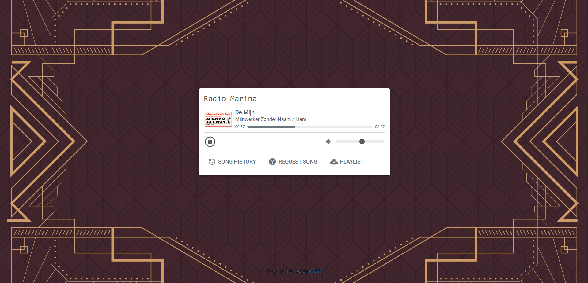
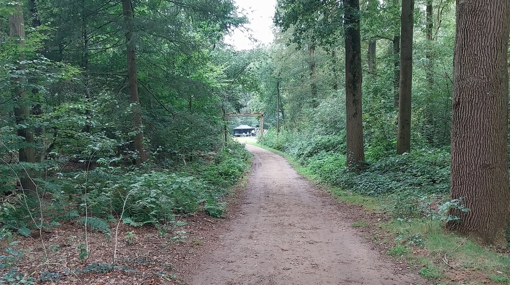
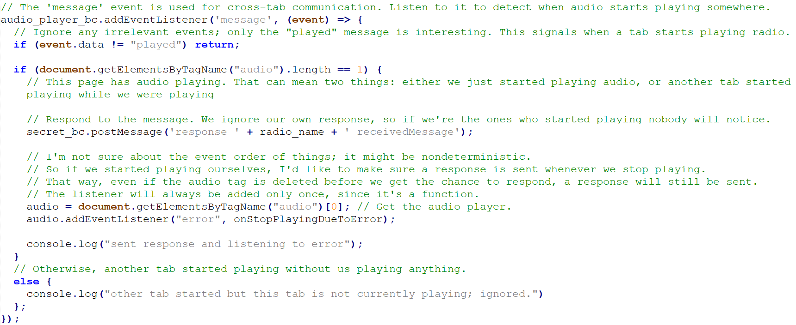

Radio Marina (2024)
When creating my character for an outdoor roleplaying event, I decided I wanted to play an anarchist running a pirate radio. The event already had participants playing music on their phones to simulate radio or record players, and I saw an opportunity to introduce live radio broadcasts.
With the event being in the middle of a forest, connection was a major issue. I solved this using the hotspot functionality on a Raspberry Pi, creating a small local network. The range of this network was large enough to cover the most relevant playing area; outdoor conditions are good for connections, as is the lack of interference in such a location. The network can easily be expanded in the future using a more powerful WiFi router or a network of mobile phone hotspots if necessary.
Also installed on the Raspberry Pi is the AzuraCast software, a flexible framework for running online radio. In my case, I used it to run two radio channels on separate web pages: one for my own radio channel and one to facilitate the event's own channel.
When the Raspberry Pi is connected to the larger internet, traffic is routed from an address on my own website to the radio's web pages. When the device is offline, it runs its own DNS to point users to the same website. I initially considered simply using the IP address of the Raspberry Pi to connect to the radio, but this made browsers warn or even prevent users from using HTTPS when connected. This approach allows the device to stay offline for 90 days and still maintain a trusted certificate — more than long enough for my use case.
To add an additional "puzzle element" to the radio, I recently added a third, 'secret' radio channel filled with secret messages. Scattered throughout my character's belongings are calculations, blueprints, and wiring diagrams for running a radio channel encrypted within her normal radio channel. Specifically, some of the sounds are manipulated to cancel out when the sound waves are combined with that of another radio frequency, revealing a secret third channel. Do not ask me about the physical accuracy of this; I'm not a physicist and all of this is for a game of make-believe. Much more my thing is actually implementing this: AzuraCast provides the option to add your own JavaScript code to its web pages. By finding out which events AzuraCast uses to start and stop a stream and communicating this information across tabs, I was able to detect when a user started playing 2 different radio channels at the same time. When this happens, my code replaces the audio source of one of the streams with the audio source of the secret stream. To provide the person discovering this secret with visual feedback as well, the background and title of the page change to represent the glitched nature of the secret radio stream.
All in all, this project was a lot of fun to work on, and invited many other players to contribute to the radio in their own way — which is the ultimate reward for a project like this.